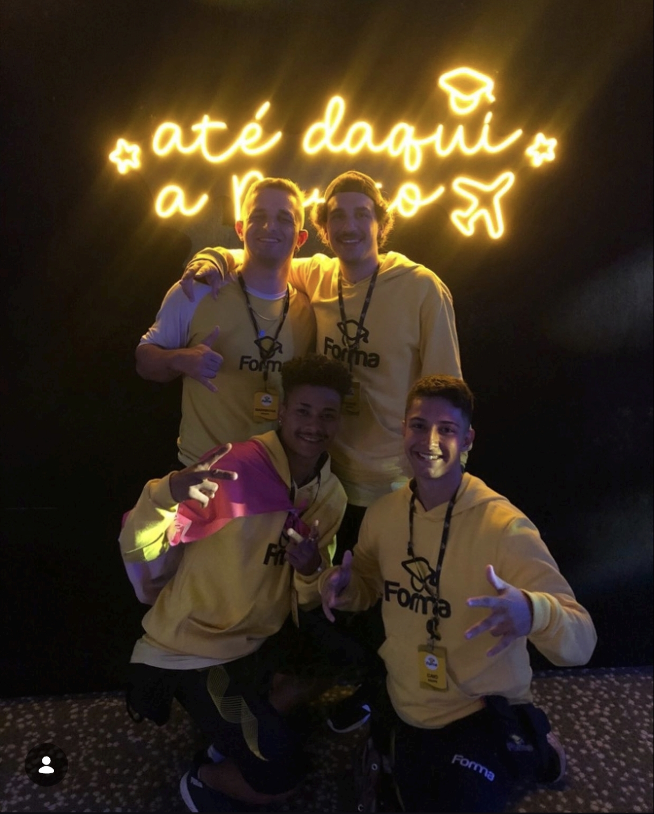
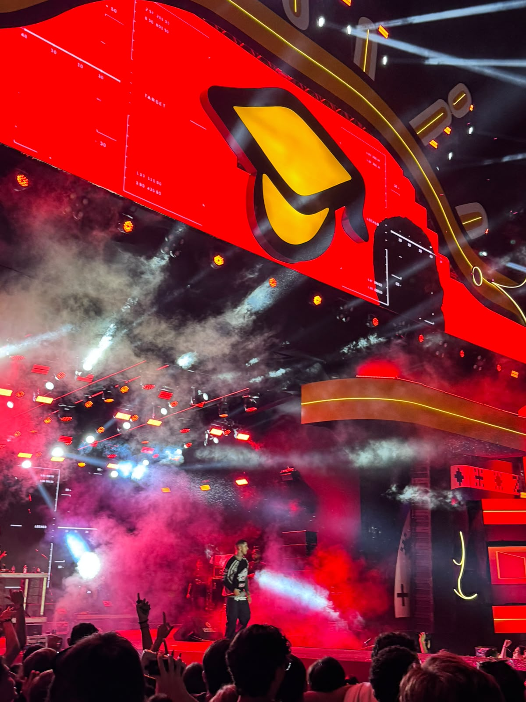
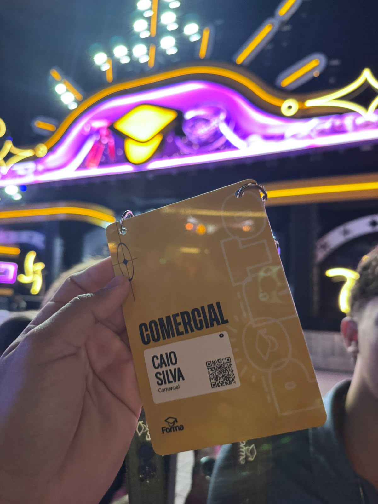
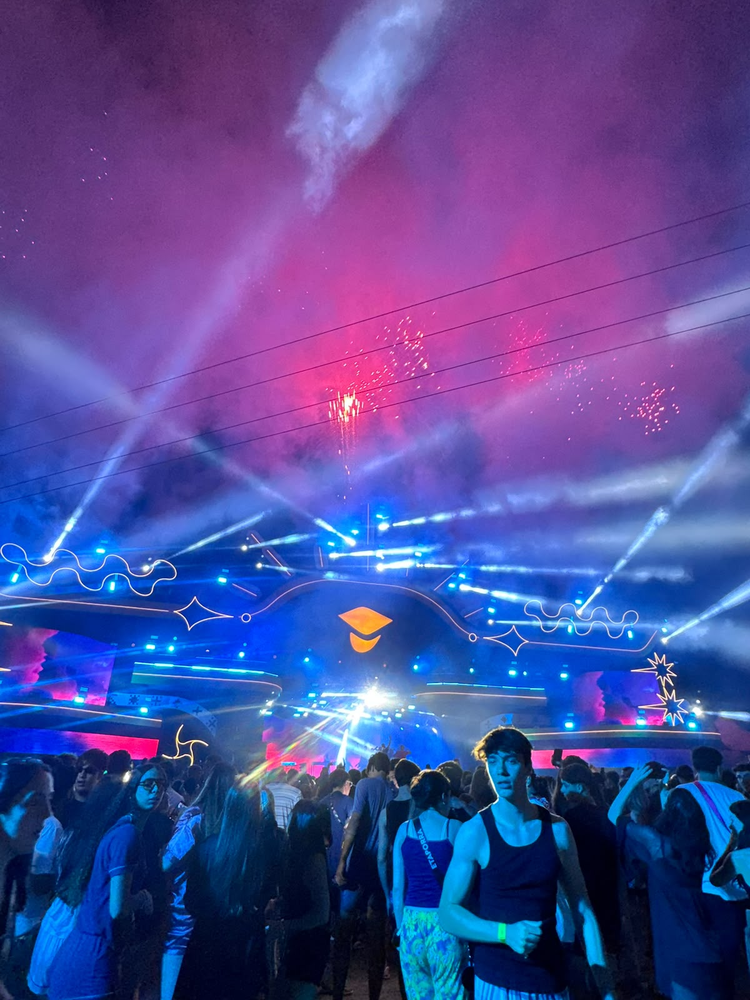
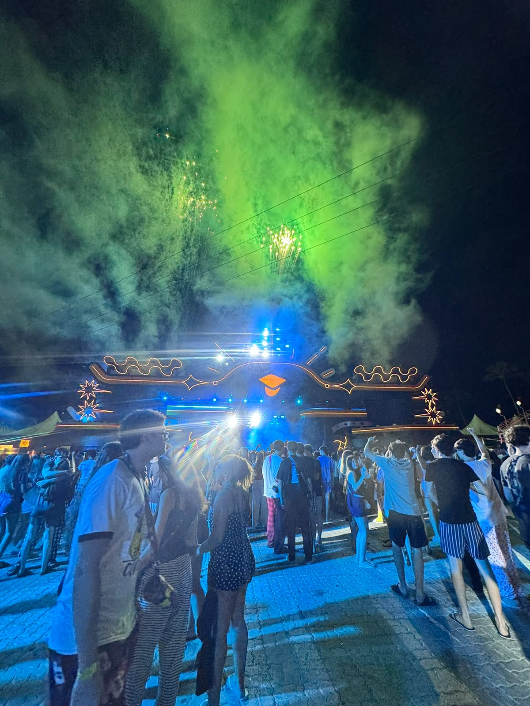

Acompanhamento
Acompanhamento de grupos durante excursões e viagens.
MONITOR DE TURISMO
Experiência, organização e dedicação para tornar cada viagem especial.
QUEM SOU

Minha trajetória no turismo começou com a paixão por conhecer novos lugares e proporcionar boas experiências para outras pessoas.
Ao longo dos anos, tive a oportunidade de trabalhar em diferentes empresas e acompanhar diversos grupos em viagens.
Atualmente trabalho como monitor de turismo na Forma Turismos.
MINHA EXPERIÊNCIA
Acompanhamento de grupos durante excursões e viagens.
Apoio na organização e logística das viagens.
Suporte e atendimento aos passageiros durante toda a experiência.
EXPERIÊNCIAS

MOMENTOS



EXPERIÊNCIAS
"Foi uma experiência incrível. O acompanhamento durante a viagem fez toda a diferença."
— Maria"Muito atencioso e sempre disposto a ajudar durante a viagem."
— CarlosVAMOS CONVERSAR?
Entre em contato para saber mais sobre minhas experiências e viagens.
Falar pelo WhatsApp